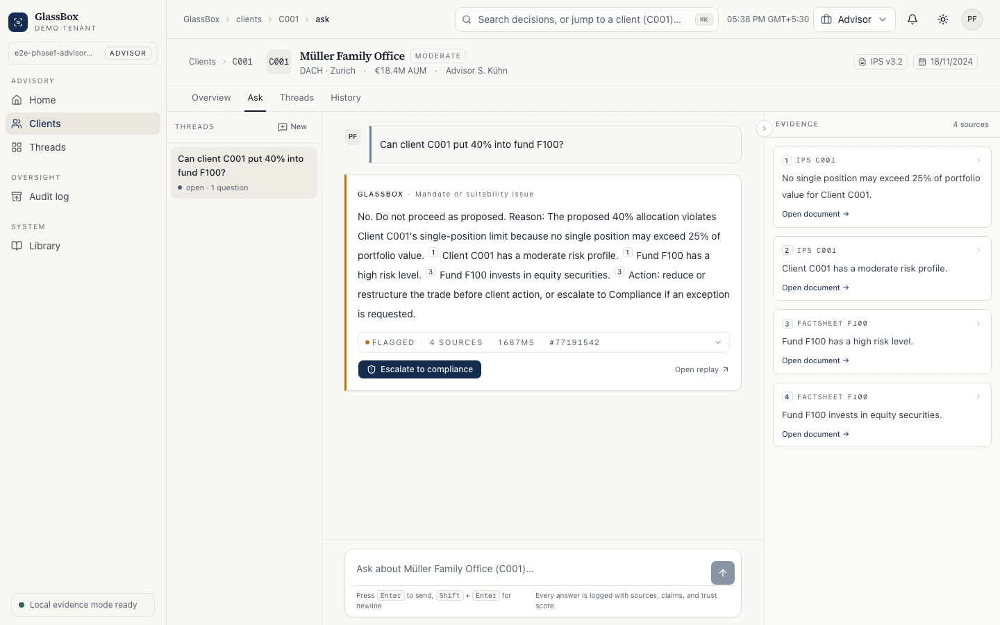
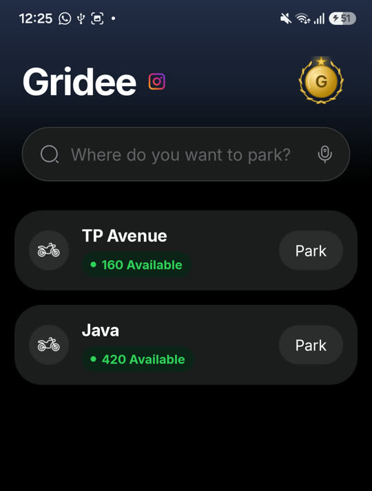

Yash Chauhan · AI/ML Engineer
Final-year B.Tech CSE (AI/ML) at SRM, graduating 2027. Co-founder of Gridee. Previously a research intern at IIT Madras.
Download résumé See the workAsk my portfolio
It answers from my projects and cites them, or it tells you it doesn’t know.
How do you know GlassBox doesn’t hallucinate?
On 183 questions I wrote alongside the engine, it made zero unsupported claims: a 95% interval of 0–2.1%.1 That’s a development set: “no failures found yet”.
Selected work

AI systems · Live Pulse The LLM writes a validated DSL. Never SQL, never PII.total_spend > ₹2,000last_order_at > 60 days
1,284customers match
Mobile · In stores
Gridee
Smart parking I co-founded. 8,000+ downloads on Android and iOS.

Experience
Toolkit
Contact
Open to full-time AI/ML and software roles from [month] 2027.